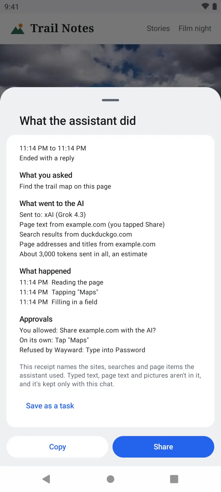
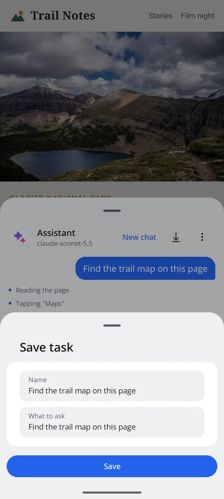
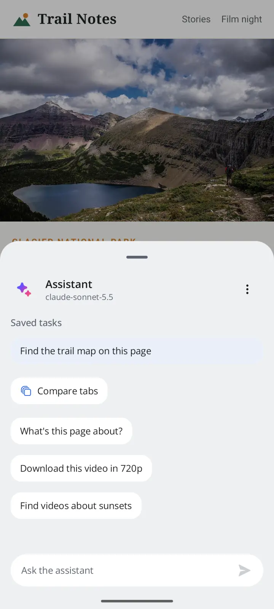
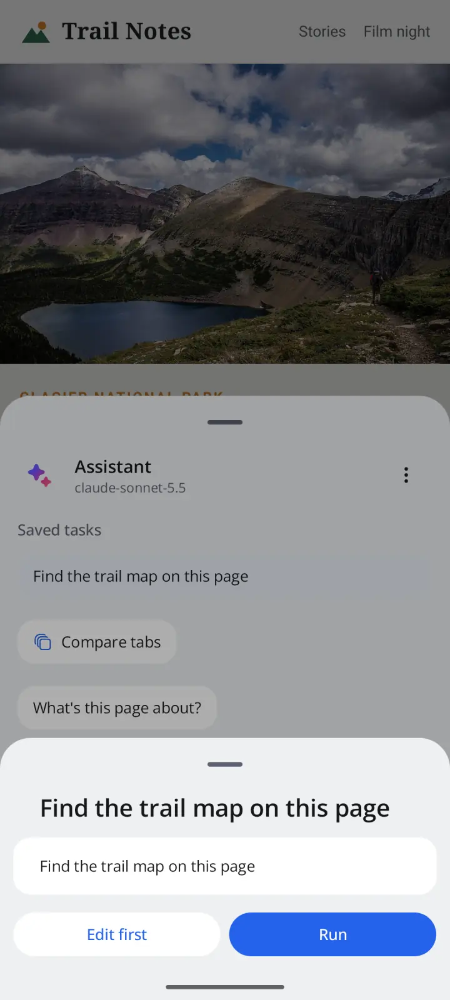
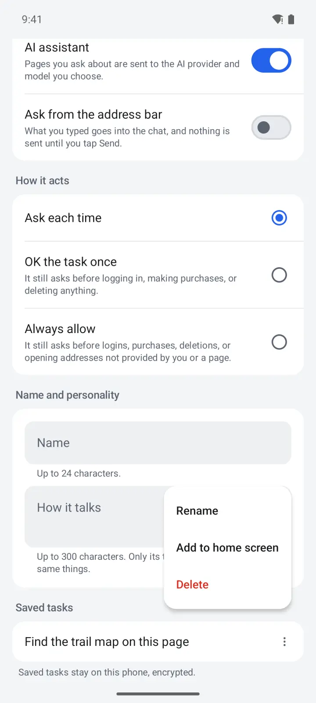

Receipts and saved tasks
How-to
When the assistant does more than reply, its receipt shows exactly what it did. And a request you make often can be saved as a task, to run again with one tap.
Read a receipt
Under a message that did more than reply, tap Receipt. "What the assistant did" (with your assistant's name, if you gave it one) lists:
- when it ran, and how it ended,
- what you asked,
- what went to the AI, and how (because you tapped Share, or without the sharing card),
- what it did, step by step,
- your approvals, and the downloads it started,
- about how many tokens were sent in all, an estimate.
Copy or share it from the bottom. It names the sites, searches and page items the assistant used, but not typed text, page text or pictures, and it's kept only with this chat while Wayward is open.

Save a task
At the end of a receipt, tap Save as a task. Save task asks for a Name and What to ask (filled in with your request), then saves it.

Saved tasks stay on your phone, encrypted. Their words go to your AI provider only when you run one. If Wayward ever says Saved tasks can't be read right now. Try again after restarting Wayward., close Wayward and open it again.
Run a saved task
Your saved tasks show at the top of an empty chat. Tap one to see its words, then Run to send it as it is, or Edit first to change it in the message box before you send.


Rename, delete, or put one on your home screen
In Settings > AI assistant > Saved tasks, tap a task's ⋮: Rename, Add to home screen or Delete. A task's home-screen icon opens Wayward with the task's words in the assistant's message box, ready to send.
